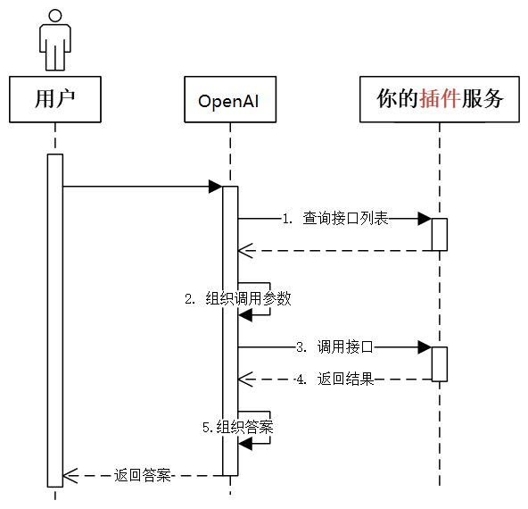
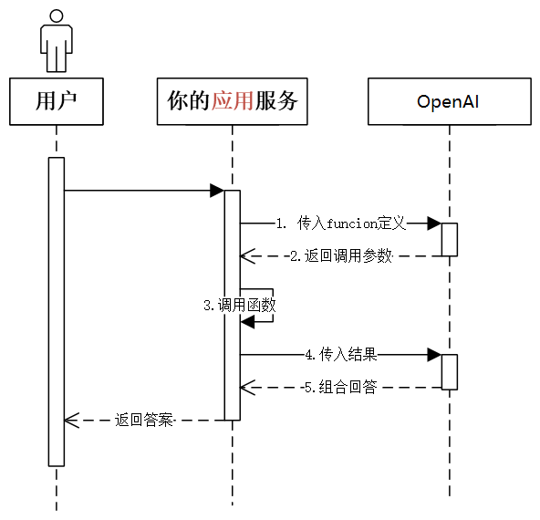

plugins/Actions的工作原理
ChatGPT 及所有大模型都有两大缺陷：没有最新消息、没有真逻辑。Plugin 能一定程度解决这两个问题。Actions 是 Plugis 的升级，是 GPTs 产品的一部分。两者区别并不大。
plugins开发，只需要定义两个文件：
yourdomain.com/.well-known/ai-plugin.json，描述插件的基本信息openai.yaml，描述插件的 API（Swagger 生成的文档）
Plugins 歇菜了，主要原因：
- 缺少「强 Agent」调度，只能手工选三个 plugin，使用成本太高。（解决此问题，相当于 App Store + Siri，可挑战手机操作系统地位）
- 不在「场景」中，不能提供端到端一揽子服务。（解决此问题，就是全能私人助理了，人类唯一需要的软件）
- 开销大。（至少两次 GPT-4 生成，和一次 Web API 调用）
Funciton Calling的机制
Function Calling 完整的官方接口文档：https://platform.openai.com/docs/guides/gpt/function-calling
值得一提：OpenAI 今天在接口里废掉了 functions 这个名字，换成了 tools。这是一个很有趣的指向。
注意事项：
- OpenAI 针对 Function Calling 做了 fine-tuning，以尽可能保证正确率。
- 但不保证不出错，包括不保证 json 格式正确。所以官方强烈建议（原文：strongly recommend）如果有对真实世界会产生影响的操作，一定插入人工流程做确认。但比纯靠 prompt 控制，可靠性是大了很多的
- 函数声明是消耗 token 的。要在功能覆盖、省钱、节约上下文窗口之间找到最佳平衡
支持function calling的国产大模型：
-
百度文心大模型:ERNIE-Bot
示例1：调用本地函数
一句话总结就是：通过GPT把function需要的参数从自然语言中提取出来，再调用函数计算结果，最后结果交给GPT以自如语言回答。
需求：实现一个回答问题的 AI。题目中如果有加法，必须能精确计算。
# 加载环境变量
from openai import OpenAI
from dotenv import load_dotenv, find_dotenv
import openai
import os
import json
_ = load_dotenv(find_dotenv()) # 读取本地 .env 文件，里面定义了 OPENAI_API_KEY
client = OpenAI(
api_key=os.getenv("OPENAI_API_KEY"),
base_url=os.getenv("OPENAI_BASE_URL")
)
def get_completion(messages, model="gpt-3.5-turbo-1106"):
response = client.chat.completions.create( # 注意，以前的 client.ChatCompletion 要换成 client.chat.completions
model=model,
messages=messages,
temperature=0.7, # 模型输出的随机性，0 表示随机性最小
tool_choice="auto", # 默认值，由系统自动决定，返回function call还是返回文字回复
tools=[{ # 用 JSON 描述函数。可以定义多个。由大模型决定调用谁。也可能都不调用
"type": "function",
"function": {
"name": "sum",
"description": "加法器，计算一组数的和",
"parameters": {
"type": "object",
"properties": {
"numbers": {
"type": "array",
"items": {
"type": "number"
}
}
}
}
}
}],
)
return response.choices[0].message
from math import *
prompt = "Tell me the sum of 1, 2, 3, 4, 5, 6, 7, 8, 9, 10."
# prompt = "桌上有 2 个苹果，四个桃子和 3 本书，一共有几个水果？"
# prompt = "1+2+3...+99+100"
# prompt = "1024 乘以 1024 是多少？" # Tools 里没有定义乘法，会怎样？
# prompt = "太阳从哪边升起？" # 不需要算加法，会怎样？
messages = [
{"role": "system", "content": "你是一个小学数学老师，你要教学生加法"},
{"role": "user", "content": prompt}
]
response = get_completion(messages)
# 把大模型的回复加入到对话历史中
if (response.content is None): # 解决 OpenAI 的一个 400 bug
response.content = ""
print("=====GPT回复=====")
print(response)
messages.append(response)
# 如果返回的是函数调用结果，则打印出来
if (response.tool_calls is not None):
# 是否要调用 sum
tool_call = response.tool_calls[0]
if (tool_call.function.name == "sum"):
# 调用 sum
args = json.loads(tool_call.function.arguments)
result = sum(args["numbers"])
print("=====函数返回=====")
print(result)
# 把函数调用结果加入到对话历史中
messages.append(
{
"tool_call_id": tool_call.id, # 用于标识函数调用的 ID
"role": "tool",
"name": "sum",
"content": str(result) # 数值result 必须转成字符串
}
)
# 再次调用大模型
print("=====最终回复=====")
print(get_completion(messages).content)
输出结果：
=====GPT回复=====
ChatCompletionMessage(content='', role='assistant', function_call=None, tool_calls=[ChatCompletionMessageToolCall(id='call_70ZFO3jjSH6atcoIbg7tYaSI', function=Function(arguments='{"numbers":[1,2,3,4,5,6,7,8,9,10]}', name='sum'), type='function')])
=====函数返回=====
55
=====最终回复=====
The sum of 1, 2, 3, 4, 5, 6, 7, 8, 9, 10 is 55.
示例2：远程/多function调用
def get_completion(messages, model="gpt-3.5-turbo-1106"):
response = client.chat.completions.create(
model=model,
messages=messages,
temperature=0, # 模型输出的随机性，0 表示随机性最小
seed=1024, # 随机种子保持不变，temperature 和 prompt 不变的情况下，输出就会不变
tool_choice="auto", # 默认值，由系统自动决定，返回function call还是返回文字回复
tools=[{
"type": "function",
"function": {
"name": "get_location_coordinate",
"description": "根据POI名称，获得POI的经纬度坐标",
"parameters": {
"type": "object",
"properties": {
"location": {
"type": "string",
"description": "POI名称，必须是中文",
},
"city": {
"type": "string",
"description": "POI所在的城市名，必须是中文",
}
},
"required": ["location", "city"],
}
}
},
{
"type": "function",
"function": {
"name": "search_nearby_pois",
"description": "搜索给定坐标附近的poi",
"parameters": {
"type": "object",
"properties": {
"longitude": {
"type": "string",
"description": "中心点的经度",
},
"latitude": {
"type": "string",
"description": "中心点的纬度",
},
"keyword": {
"type": "string",
"description": "目标poi的关键字",
}
},
"required": ["longitude", "latitude", "keyword"],
}
}
}],
)
return response.choices[0].message
import requests
amap_key = "6d672e6194caa3b639fccf2caf06c342"
def get_location_coordinate(location, city="北京"):
url = f"https://restapi.amap.com/v5/place/text?key={amap_key}&keywords={location}®ion={city}"
print(url)
r = requests.get(url)
result = r.json()
if "pois" in result and result["pois"]:
return result["pois"][0]
return None
def search_nearby_pois(longitude, latitude, keyword):
url = f"https://restapi.amap.com/v5/place/around?key={amap_key}&keywords={keyword}&location={longitude},{latitude}"
print(url)
r = requests.get(url)
result = r.json()
ans = ""
if "pois" in result and result["pois"]:
for i in range(min(3, len(result["pois"]))):
name = result["pois"][i]["name"]
address = result["pois"][i]["address"]
distance = result["pois"][i]["distance"]
ans += f"{name}\n{address}\n距离：{distance}米\n\n"
return ans
prompt = "北京三里屯附近的咖啡"
prompt = "湖北省黄梅县凤凰城附件的奶茶店"
messages = [
{"role": "system", "content": "你是一个地图通，你可以找到任何地址。"},
{"role": "user", "content": prompt}
]
response = get_completion(messages)
if (response.content is None): # 解决 OpenAI 的一个 400 bug
response.content = ""
messages.append(response) # 把大模型的回复加入到对话中
print("=====GPT回复=====")
print(response)
# 如果返回的是函数调用结果，则打印出来
while (response.tool_calls is not None):
# 1106 版新模型支持一次返回多个函数调用请求
for tool_call in response.tool_calls:
args = json.loads(tool_call.function.arguments)
print(args)
if (tool_call.function.name == "get_location_coordinate"):
print("Call: get_location_coordinate")
result = get_location_coordinate(**args)
elif (tool_call.function.name == "search_nearby_pois"):
print("Call: search_nearby_pois")
result = search_nearby_pois(**args)
print("=====函数返回=====")
print(result)
messages.append({
"tool_call_id": tool_call.id, # 用于标识函数调用的 ID
"role": "tool",
"name": tool_call.function.name,
"content": str(result) # 数值result 必须转成字符串
})
response = get_completion(messages)
print(response)
if (response.content is None): # 解决 OpenAI 的一个 400 bug
response.content = ""
messages.append(response) # 把大模型的回复加入到对话中
print("=====最终回复=====")
print(response.content)
输出结果：
=====GPT回复=====
ChatCompletionMessage(content='', role='assistant', function_call=None, tool_calls=[ChatCompletionMessageToolCall(id='call_cZKzQiY92tMyZn9TIRiHZqV9', function=Function(arguments='{"location":"凤凰城","city":"黄梅县"}', name='get_location_coordinate'), type='function')])
{'location': '凤凰城', 'city': '黄梅县'}
Call: get_location_coordinate
https://restapi.amap.com/v5/place/text?key=6d672e6194caa3b639fccf2caf06c342&keywords=凤凰城®ion=黄梅县
=====函数返回=====
None
ChatCompletionMessage(content=None, role='assistant', function_call=None, tool_calls=[ChatCompletionMessageToolCall(id='call_I4vY0OpzGryBFKdgfi6OI2R3', function=Function(arguments='{"longitude":"115.944","latitude":"30.075","keyword":"奶茶店"}', name='search_nearby_pois'), type='function')])
{'longitude': '115.944', 'latitude': '30.075', 'keyword': '奶茶店'}
Call: search_nearby_pois
https://restapi.amap.com/v5/place/around?key=6d672e6194caa3b639fccf2caf06c342&keywords=奶茶店&location=115.944,30.075
=====函数返回=====
ChatCompletionMessage(content='抱歉，我无法找到凤凰城附近的奶茶店。是否有其他地点或关键词需要我帮忙搜索？', role='assistant', function_call=None, tool_calls=None)
=====最终回复=====
抱歉，我无法找到凤凰城附近的奶茶店。是否有其他地点或关键词需要我帮忙搜索？
示例3：通过Function Calling查询数据库
需求：从订单表中查询各种信息，比如某个用户的订单数量、某个商品的销量、某个用户的消费总额等等。
from openai import OpenAI
import os
import json
from dotenv import load_dotenv, find_dotenv
_ = load_dotenv(find_dotenv()) # 读取本地 .env 文件，里面定义了 OPENAI_API_KEY
client = OpenAI(
api_key=os.getenv("OPENAI_API_KEY"),
base_url=os.getenv("OPENAI_BASE_URL")
)
def get_sql_completion(messages, model="gpt-3.5-turbo-1106"):
response = client.chat.completions.create(
model=model,
messages=messages,
temperature=0, # 模型输出的随机性，0 表示随机性最小
tools=[{ # 摘自 OpenAI 官方示例 https://github.com/openai/openai-cookbook/blob/main/examples/How_to_call_functions_with_chat_models.ipynb
"type": "function",
"function": {
"name": "ask_database",
"description": "Use this function to answer user questions about business. \
Output should be a fully formed SQL query.",
"parameters": {
"type": "object",
"properties": {
"query": {
"type": "string",
"description": f"""
SQL query extracting info to answer the user's question.
SQL should be written using this database schema:
{database_schema_string}
The query should be returned in plain text, not in JSON.
The query should only contain grammars supported by MySQL.
""",
}
},
"required": ["query"],
}
}
}],
)
return response.choices[0].message
# 描述数据库表结构
database_schema_string = """
CREATE TABLE orders (
id INT PRIMARY KEY NOT NULL, -- 主键，不允许为空
customer_id INT NOT NULL, -- 客户ID，不允许为空
product_id VARCHAR(255) NOT NULL, -- 产品ID，不允许为空
price DECIMAL(10,2) NOT NULL, -- 价格，不允许为空
status INT NOT NULL, -- 订单状态，整数类型，不允许为空。0代表待支付，1代表已支付，2代表已退款
create_time TIMESTAMP DEFAULT CURRENT_TIMESTAMP, -- 创建时间，默认为当前时间
pay_time TIMESTAMP -- 支付时间，可以为空
);
"""
import pymysql
def connect_to_mysql():
try:
# 创建连接
cnx = pymysql.connect(
host=os.getenv("DB_HOST"),
user=os.getenv("DB_USER"),
password=os.getenv("DB_PASSWORD"),
db=os.getenv("DB_database")
)
# 创建游标对象
cursor = cnx.cursor()
return cnx, cursor
except pymysql.MySQLError as e:
print("Error: {连接数据异常}".format(e))
def close_to_mysql(cnx, cursor):
try:
# 关闭游标和连接
cursor.close()
cnx.close()
except pymysql.MySQLError as e:
print("Error: {关闭游标和连接异常}".format(e))
# 连接数据库
cnx, cursor = connect_to_mysql()
try:
# 检查表是否存在
cursor.execute("SHOW TABLES LIKE 'orders'")
if cursor.fetchone():
# 如果表存在，执行删除操作
cursor.execute("DROP TABLE orders")
except pymysql.MySQLError as e:
print("Error: {删除表格异常}".format(e))
# 创建orders表（数据库没有该表）
cursor.execute(database_schema_string)
# 插入5条明确的模拟记录
mock_data = [
(1, 1001, 'TSHIRT_1', 50.00, 0, '2023-10-12 10:00:00', None),
(2, 1001, 'TSHIRT_2', 75.50, 1, '2023-10-16 11:00:00', '2023-10-16 12:00:00'),
(3, 1002, 'SHOES_X2', 25.25, 2, '2023-10-17 12:30:00', '2023-10-17 13:00:00'),
(4, 1003, 'HAT_Z112', 60.75, 1, '2023-10-20 14:00:00', '2023-10-20 15:00:00'),
(5, 1002, 'WATCH_X001', 90.00, 0, '2023-10-28 16:00:00', None)
]
for record in mock_data:
cursor.execute('''
INSERT INTO orders (id, customer_id, product_id, price, status, create_time, pay_time)
VALUES (%s, %s, %s, %s, %s, %s, %s)
''', record)
# 提交事务
cnx.commit()
# 执行 SQL 查询语句
cursor.execute("SELECT * FROM orders")
# 获取查询结果
results = cursor.fetchall()
for row in results:
print(row)
def ask_database(query):
cursor.execute(query)
records = cursor.fetchall()
return records
prompt = "10月份的销售额"
# prompt = "统计每月每件商品的销售额"
# prompt = "哪个用户消费最高？消费多少？"
messages = [
{"role": "system", "content": "基于 order 表回答用户问题"},
{"role": "user", "content": prompt}
]
response = get_sql_completion(messages)
if response.content is None:
response.content = ""
messages.append(response)
print("====Function Calling====")
print(response)
if response.tool_calls is not None:
tool_call = response.tool_calls[0]
if tool_call.function.name == "ask_database":
arguments = tool_call.function.arguments
args = json.loads(arguments)
print("====SQL====")
print(args["query"])
result = ask_database(args["query"])
print("====DB Records====")
print(result)
messages.append({
"tool_call_id": tool_call.id,
"role": "tool",
"name": "ask_database",
"content": str(result)
})
response = get_sql_completion(messages)
print("====最终回复====")
print(response.content)
# 关闭数据库
close_to_mysql(cnx, cursor)
示例4：用function calling实现多表查询
from openai import OpenAI
import os
import json
from dotenv import load_dotenv, find_dotenv
_ = load_dotenv(find_dotenv()) # 读取本地 .env 文件，里面定义了 OPENAI_API_KEY
client = OpenAI(
api_key=os.getenv("OPENAI_API_KEY"),
base_url=os.getenv("OPENAI_BASE_URL")
)
def get_sql_completion(messages, model="gpt-3.5-turbo-1106"):
response = client.chat.completions.create(
model=model,
messages=messages,
temperature=0, # 模型输出的随机性，0 表示随机性最小
tools=[{ # 摘自 OpenAI 官方示例 https://github.com/openai/openai-cookbook/blob/main/examples/How_to_call_functions_with_chat_models.ipynb
"type": "function",
"function": {
"name": "ask_database",
"description": "Use this function to answer user questions about business. \
Output should be a fully formed SQL query.",
"parameters": {
"type": "object",
"properties": {
"query": {
"type": "string",
"description": f"""
SQL query extracting info to answer the user's question.
SQL should be written using this database schema:
{database_schema_string}
The query should be returned in plain text, not in JSON.
The query should only contain grammars supported by MySQL.
""",
}
},
"required": ["query"],
}
}
}],
)
return response.choices[0].message
import pymysql
def connect_to_mysql():
try:
# 创建连接
cnx = pymysql.connect(
host=os.getenv("DB_HOST"),
user=os.getenv("DB_USER"),
password=os.getenv("DB_PASSWORD"),
db=os.getenv("DB_database")
)
# 创建游标对象
cursor = cnx.cursor()
return cnx, cursor
except pymysql.MySQLError as e:
print("Error: {连接数据异常}".format(e))
def close_to_mysql(cnx, cursor):
try:
# 关闭游标和连接
cursor.close()
cnx.close()
except pymysql.MySQLError as e:
print("Error: {关闭游标和连接异常}".format(e))
sql_schema_orders = """
CREATE TABLE orders (
id INT PRIMARY KEY NOT NULL, -- 主键，不允许为空
customer_id INT NOT NULL, -- 客户ID，不允许为空
product_id INT NOT NULL, -- 产品ID，不允许为空
status INT NOT NULL, -- 订单状态，整数类型，不允许为空。0代表待支付，1代表已支付，2代表已退款
create_time TIMESTAMP DEFAULT CURRENT_TIMESTAMP, -- 创建时间，默认为当前时间
pay_time TIMESTAMP -- 支付时间，可以为空
);
"""
sql_schema_products = """
CREATE TABLE products (
id INT PRIMARY KEY NOT NULL, -- 主键，不允许为空
product_name VARCHAR(255) NOT NULL, -- 产品名称，不允许为空
price DECIMAL(10,2) NOT NULL -- 价格，不允许为空
);
"""
sql_schema_customers = """
CREATE TABLE customers (
id INT PRIMARY KEY NOT NULL, -- 主键，不允许为空
customer_name VARCHAR(255) NOT NULL, -- 客户名，不允许为空
email VARCHAR(255) UNIQUE, -- 邮箱，唯一
register_time TIMESTAMP DEFAULT CURRENT_TIMESTAMP -- 注册时间，默认为当前时间
);
"""
# 描述数据库表结构
database_schema_string = f"""
{sql_schema_customers.strip()}
{sql_schema_products.strip()}
{sql_schema_orders.strip()}
"""
# 连接数据库
cnx, cursor = connect_to_mysql()
try:
# 检查表是否存在
cursor.execute("SHOW TABLES LIKE 'orders'")
if cursor.fetchone():
# 如果表存在，执行删除操作
cursor.execute("DROP TABLE orders")
# 检查表是否存在
cursor.execute("SHOW TABLES LIKE 'products'")
if cursor.fetchone():
# 如果表存在，执行删除操作
cursor.execute("DROP TABLE products")
# 检查表是否存在
cursor.execute("SHOW TABLES LIKE 'customers'")
if cursor.fetchone():
# 如果表存在，执行删除操作
cursor.execute("DROP TABLE customers")
except pymysql.MySQLError as e:
print("Error: {删除表格异常}".format(e))
# 创建orders表（数据库没有该表）
cursor.execute(sql_schema_orders)
# 创建products表
cursor.execute(sql_schema_products)
# 创建customers表
cursor.execute(sql_schema_customers)
# 插入明确的模拟记录
orders_mock_data = [
(1, 1001, 101, 0, '2023-10-12 10:00:00', None),
(2, 1001, 102, 1, '2023-10-16 11:00:00', '2023-10-16 12:00:00'),
(3, 1002, 103, 2, '2023-10-17 12:30:00', '2023-10-17 13:00:00'),
(4, 1003, 104, 1, '2023-10-20 14:00:00', '2023-10-20 15:00:00'),
(5, 1002, 105, 0, '2023-10-28 16:00:00', None)
]
products_mock_data = [
(101, 'TSHIRT_1', 50.00),
(102, 'TSHIRT_2', 75.50),
(103, 'SHOES_X2', 25.25),
(104, 'HAT_Z112', 60.75),
(105, 'WATCH_X001', 90.00)
]
customers_mock_data = [
(1001, '小明', '123@qq.com', '2022-10-16 11:00:00'),
(1002, '小王', '456@qq.com', '2022-10-17 12:30:00'),
(1003, '小李', '789@qq.com', '2022-10-20 14:00:00')
]
for record in orders_mock_data:
cursor.execute('''
INSERT INTO orders (id, customer_id, product_id, status, create_time, pay_time)
VALUES (%s, %s, %s, %s, %s, %s)
''', record)
for record in products_mock_data:
cursor.execute('''
INSERT INTO products (id, product_name, price)
VALUES (%s, %s, %s)
''', record)
for record in customers_mock_data:
cursor.execute('''
INSERT INTO customers (id, customer_name, email, register_time)
VALUES (%s, %s, %s, %s)
''', record)
# 提交事务
cnx.commit()
查询越复杂出错率越高，例如下面第二prompt例子。
def ask_database(query):
cursor.execute(query)
records = cursor.fetchall()
return records
def init_messages():
messages = [
{"role": "system", "content": "基于多个数据库表回答用户问题"}
]
return messages
# 对话窗口
def test2sql_chat(messages, prompt):
messages.append({"role": "user", "content": prompt})
response = get_sql_completion(messages)
if response.content is None:
response.content = ""
messages.append(response)
print("====Function Calling====")
print(response)
if response.tool_calls is not None:
tool_call = response.tool_calls[0]
if tool_call.function.name == "ask_database":
arguments = tool_call.function.arguments
args = json.loads(arguments)
print("====SQL====")
print(args["query"])
result = ask_database(args["query"])
print("====DB Records====")
print(result)
messages.append({
"tool_call_id": tool_call.id,
"role": "tool",
"name": "ask_database",
"content": str(result)
})
response = get_sql_completion(messages)
if (response.content is None): # 解决 OpenAI 的一个 400 bug
response.content = "很抱歉我没有查询到！是否可以将复杂查询换成一步一步的简单查询。"
print("====最终回复====")
print(response.content)
return messages
messages = init_messages()
#prompt = "统计每月每件商品的销售额"
prompt = "10月份消费最高的用户是谁？他买了哪些商品？ 每件商品买了几件？花费多少？"
messages = test2sql_chat(messages, prompt)
多个提问模型很难一次完成，我们一步步提问（思维链）。gpt-3.5-turbo-1106复杂查询（三表以上）就容易出错，考虑换gpt-4-1106-preview。
messages = init_messages()
messages = test2sql_chat(messages, prompt = "10月份消费最高的用户是谁？")
messages = test2sql_chat(messages, prompt = "他买了哪些商品？")
messages = test2sql_chat(messages, prompt = "每件商品买了几件？花费多少？")


...